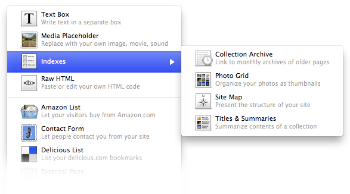

Index
An index is a list of all or some of the pages in a Collection. To create an index or indexes, select the type of index from the Object menu in the toolbar.

Index Types
There are four different types of indexes available to use:
- Collection Archive
- Generates month-by-month archive of every page in a collection.
- Photo Grid
- Thumbnails with page titles in a grid arrangement.
- Site Map
- Lists all the pages of a site. This is useful for more complex sites to aid visitors in finding the page they want.
- Titles & Summaries
- Page Titles and/or summaries that can be customized with many different layouts.
Settings
You can configure the setting specific to the index that you are using in the by clicking on the index object to select it and opening the Object Inspector.